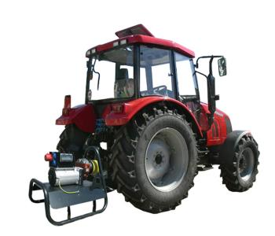
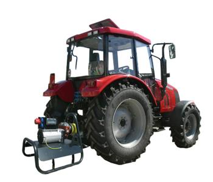

Мы даём Вам свободу и энергонезависимость!
Благодаря нашей технике Вы больше не привязаны к коммунальным источникам электроэнергии!
Генераторы с приводом от ВОМ трактора производства «БМЕ-Дизель» (Беларусь)
В связи с тем, что в нашей стране сложилась сложная экономическая ситуация, вся страна стремиться к энергонезависимости. ООО «ПАТРИОТ Технолоджис», как патриотически настроенная компания, сосредоточила свою деятельность на продаже высококачественных и недорогих источников автономного питания.
Генератор с приводом от вала отбора мощности (ВОМ) не имеет своего двигателя, он используется как навесное оборудование для трактора.
Этот генератор значительно отличается от стандартных дизель-генераторов тем, что не имеет своего двигателя. В качестве двигателя используется двигатель трактора, а генератор забирает мощность через ВОМ и генерирует электроэнергию. Благодаря этому, купить генератор можно по существенно более низкой цене.
Конструктивные особенности такого генератора максимально упрощают монтаж и запуск. Он оснащён не только трёхфазной, но и однофазной розетками. Время монтажа и ввода в эксплуатацию занимает не более 5 минут.
Этот генератор подключается через жёсткое шлицевое соединение с (ВОМ) через короткий кардан, благодаря чему его эффективность существенно выше, в сравнении со старыми моделями.

Немаловажная особенность генератора с приводом от ВОМ, это его мобильность и возможность деверсификации потребления по времени.
Такой генератор мощностью 30 кВт вполне может обеспечить предприятие с потреблением 100 кВт, благодаря разбивке по времени потребления (в тот момент, когда основное электропитание отсутствует).
Наша компания обеспечивает полное обслуживание и ремонт генераторов.
Готовы предоставить более подробную техническую и коммерческую информацию по Вашему запросу в кратчайшие сроки.
Генератор с приводом от вала отбора мощности (ВОМ) не имеет своего двигателя, он используется как навесное оборудование для трактора.
Этот генератор значительно отличается от стандартных дизель-генераторов тем, что не имеет своего двигателя. В качестве двигателя используется двигатель трактора, а генератор забирает мощность через ВОМ и генерирует электроэнергию. Благодаря этому, купить генератор можно по существенно более низкой цене.
Конструктивные особенности такого генератора максимально упрощают монтаж и запуск. Он оснащён не только трёхфазной, но и однофазной розетками. Время монтажа и ввода в эксплуатацию занимает не более 5 минут.
Этот генератор подключается через жёсткое шлицевое соединение с (ВОМ) через короткий кардан, благодаря чему его эффективность существенно выше, в сравнении со старыми моделями.

Немаловажная особенность генератора с приводом от ВОМ, это его мобильность и возможность деверсификации потребления по времени.
Такой генератор мощностью 30 кВт вполне может обеспечить предприятие с потреблением 100 кВт, благодаря разбивке по времени потребления (в тот момент, когда основное электропитание отсутствует).
Наша компания обеспечивает полное обслуживание и ремонт генераторов.
Готовы предоставить более подробную техническую и коммерческую информацию по Вашему запросу в кратчайшие сроки.